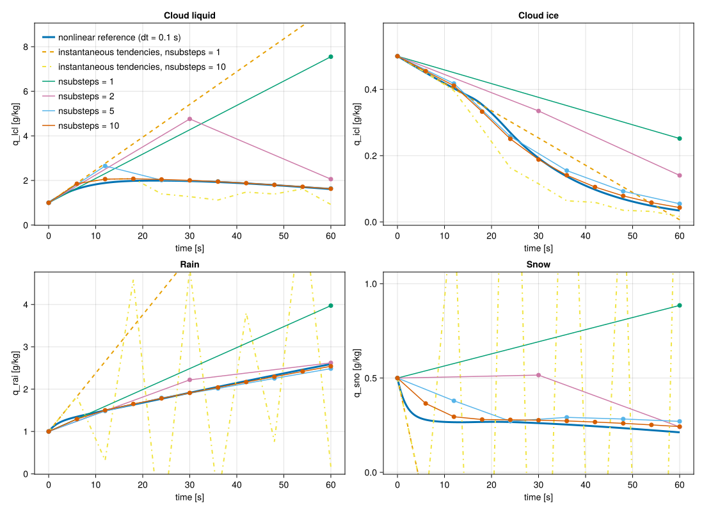

Bulk Tendencies
Linearized average tendencies
Microphysical source terms can be stiff, especially for depletion processes such as evaporation, sublimation, and melting. To improve stability and allow larger timesteps, we introduce a linearized implicit formulation for computing time-averaged bulk tendencies.
The idea is to approximate the nonlinear microphysics tendencies locally as a linear system:
\[\frac{dq}{dt} \approx M q + e\]
where $q = (q_{\mathrm{lcl}}, q_{\mathrm{icl}}, q_{\mathrm{rai}}, q_{\mathrm{sno}})$, and the matrix $M$ and vector $e$ are constructed from the instantaneous tendencies.
Donor-based linearization
Each microphysical process is linearized with respect to its donor species:
Transfer processes (e.g. accretion, conversion):
\[S \;\rightarrow\; D \, q_{\text{donor}}, \quad D = \frac{S}{\max(\epsilon, q_{\text{donor}})}\]
Vapor → condensate sources are treated as constant sources (added to $e$)
Condensate → vapor sinks are treated as linear sinks:
\[S \;\rightarrow\; -D q\]
With this formulation, sink terms take the form:
\[\frac{dq}{dt} = -D q\]
which corresponds to exponential decay over the timestep, providing strong numerical stability.
Linearized implicit solve
For a timestep $\Delta t$, we solve the linearized system implicitly:
\[\frac{q^\star - q^0}{\Delta t} = M q^\star + e\]
which gives:
\[\left(I/\Delta t - M\right) q^\star = e + q^0/\Delta t\]
The average tendency is then:
\[\overline{T} = \frac{q^\star - q^0}{\Delta t}\]
Sparse 4×4 structure
The system has a fixed sparse structure:
\[\begin{bmatrix} a_{11} & 0 & 0 & 0 \\ 0 & a_{22} & 0 & 0 \\ a_{31} & 0 & a_{33} & a_{34} \\ a_{41} & a_{42} & a_{43} & a_{44} \end{bmatrix}\]
This allows an efficient solve:
- $q_{\mathrm{lcl}}$ and $q_{\mathrm{icl}}$ are solved independently (scalar solves)
- $q_{\mathrm{rai}}$ and $q_{\mathrm{sno}}$ are solved as a 2×2 system
This avoids forming or inverting a full dense matrix and is efficient on both CPU and GPU.
Substepping
A single linearization assumes the operator $M$ is constant over the timestep. To better capture nonlinear effects and regime changes (e.g. near freezing), we apply substepping:
- Split the timestep into
nsubsubsteps - At each substep:
- rebuild $M$ and $e$ from the updated state
- solve the linearized system
- update $q$ and temperature
As nsub increases, the solution approaches the nonlinear evolution of the system.
Thermodynamic assumption
Within each timestep, we assume that thermodynamic variables such as density and energy remain approximately constant. As a result, temperature changes are modeled solely through latent heating:
\[\frac{dT}{dt} = \frac{L_v}{c_p} \left(\dot{q}_{\mathrm{lcl}} + \dot{q}_{\mathrm{rai}}\right) + \frac{L_s}{c_p} \left(\dot{q}_{\mathrm{icl}} + \dot{q}_{\mathrm{sno}}\right)\]
This is consistent with the microphysics-only update and avoids coupling to a full thermodynamic solve.
Example figures
include("plots/BulkTendencies_plots.jl")CairoMakie.Screen{SVG}

The figure compares:
- a nonlinear reference solution, obtained using a finely substepped explicit integration
- the linearized implicit method with different numbers of substeps (
nsub) - a single explicit update using the instantaneous tendency at $t=0$
- explicit updates, using the instantaneous tendency with $10$ substeps
Initial conditions
- $\rho = 1\,\mathrm{kg/m^3}$
- $q_{\mathrm{tot}} = 13\,\mathrm{g/kg}$
- $q_{\mathrm{lcl}} = q_{\mathrm{rai}} = 1\,\mathrm{g/kg}$
- $q_{\mathrm{icl}} = q_{\mathrm{sno}} = 0.5\,\mathrm{g/kg}$
- $T = 278\,\mathrm{K}$
These conditions activate multiple processes simultaneously (liquid, ice, rain, and snow interactions) and are close to freezing, making the case strongly nonlinear.
Interpretation
nsub = 1corresponds to a single linearization over the full step, which is the least accurate but cheapest approximation.- Increasing
nsubimproves the solution by updating the linearization more frequently. - For sufficiently large
nsub, the solution approaches the nonlinear reference trajectory. Evennsub = 2agrees well with the nonlinear solution. - The dashed line (instantaneous tendency) shows a simple explicit Euler step, which can significantly deviate from the true evolution.
- The yellow dash-dotted line shows an integration using instantaneous tendencies with 10 substeps and exhibits significant instabilities. Thus, without the linearized model, even 10 substeps do not converge.
This demonstrates that the linearized implicit substepping method provides a controllable trade-off between cost and accuracy, while maintaining stability.
Current limitations
- Average (implicit) bulk tendencies are currently implemented only for the one-moment microphysics scheme.
- For other microphysics schemes, only instantaneous bulk tendencies are available at present.